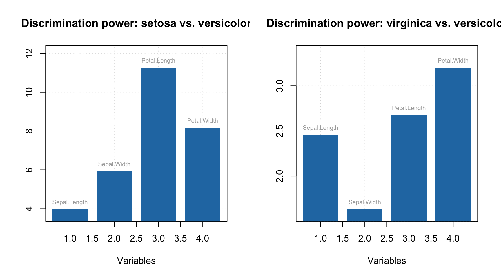
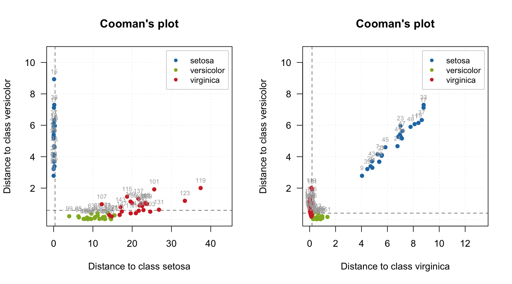
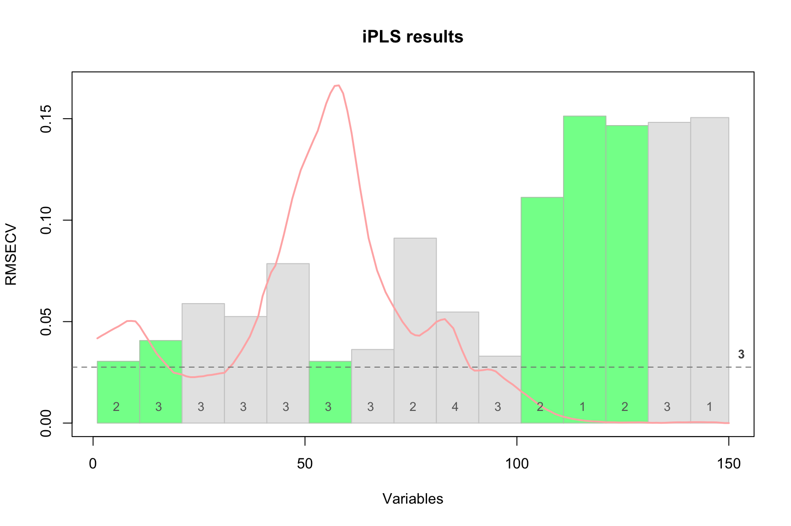
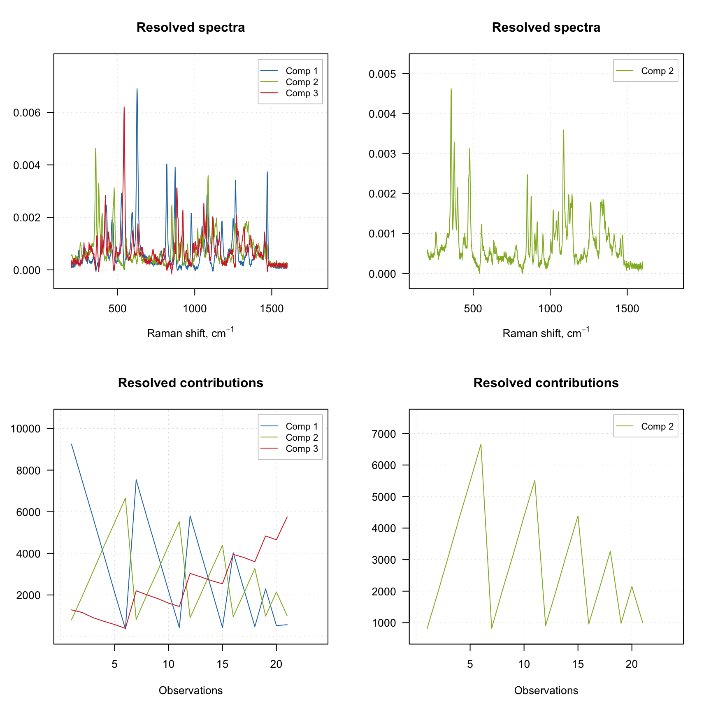

Purity based
The purity based approach implemented in mdatools was proposed by Willem Windig and co-authors in 2005 as an alternative to classical SIMPLISMA method. The general idea of the approach is to find variables (wavelength, wavenumbers, etc.) in \(\mathbf{D}\), which are influenced mostly by one chemical component. Such variables are called as pure variables. If we identify pure variable for each of the components, then we can solve the MCR problem by using ordinary least squares method:
\[\mathbf{\hat{S}} = \mathbf{D}^T \mathbf{D}_R (\mathbf{D}^T_R \mathbf{D})^{-1}\] \[\mathbf{\hat{C}} = \mathbf{D} \mathbf{\hat{S}} (\mathbf{\hat{S}}^T \mathbf{\hat{S}})^{-1}\]
Here \(\mathbf{\hat{S}}\) and \(\mathbf{\hat{C}}\) are the spectra and concentrations (contributions) of the pure components estimated by this method. The matrix \(\mathbf{D}_R\) is a reduced version of \(\mathbf{D}\) where only pure variables are kept (one for each pure component, so this matrix has a dimension \(A \times A\)). So the question is how to find the pure variables?
Windig and co-authors proposed to do it by computing angles between the spectral variables. For the first component angle between all variables and a vector of ones is computed and first pure variable is selected as the one having the largest angle. Then, angles between the first selected pure variable and the rest are computed and, again, variable with the largest angle is selected as the purest. This continues until pure variables for all components are identified.
To reduce the influence of noisy variables, correction factor, is computed for each variable as follows:
\[\mathbf{n} = \frac{\mathbf{m}}{\mathbf{m} + offset \times \mathrm{max}(\mathbf{m})}\]
Here \(\mathbf{m}\) is a mean spectrum computed for the original data, \(\mathbf{D}\), and the \(offset\) is a tuning parameter defined by a user. Usually a value between 0.001 and 0.05 is a good choice for the offset. More details about the method can be found in the above mentioned paper.
An example
Function mcrpure() implements the purity based method in mdatools. It has two mandatory arguments — matrix with the original spectra and number of pure components — as well as several extra parameters. The most important one is the offset, which by default is 0.05.
The code below shows how to resolve the spectra from the carbs dataset and show summary information:
data(carbs)
m = mcrpure(carbs$D, ncomp = 3)
summary(m)##
## Summary for MCR Purity case (class mcrpure)
## Expvar Cumexpvar Varindex Purity
## Comp 1 61.94 61.94 782 36.038
## Comp 2 24.96 86.91 1245 56.703
## Comp 3 12.65 99.56 1059 46.941The summary shows explained variance, cumulative explained variance, index of pure variable and its purity value for each of the three components. For example, in case of the first component, the purest variable is located in column 782 and its purity (in this case an angle between this variable and a vector of ones) is equal to 36.038 degrees. As one can see, current solution explains 99.6% of the total variance.
Any MCR method in mdatools contains the resolved spectra (as m$resspec) and contributions (as m$rescont) as well as some extra data, e.g. purity spectra for each component, etc. You can see a list of all objects available by simply printing the object with mcrpure results:
show(m)##
## MCR Purity unmixing case (class mcrpure)
##
##
## Call:
## mcrpure(x = carbs$D, ncomp = 3)
##
## Major model fields:
## $ncomp - number of calculated components
## $resspec - matrix with resolved spectra
## $rescont - matrix with resolved contributions
## $purityspec - matrix with purity spectra
## $purevars - vector with indices of pure variables
## $purevals - purity values for the selected pure variables
## $expvar - vector with explained variance
## $cumexpvar - vector with cumulative explained variance
## $offset - offset value used to compute the purity
## $info - case info provided by userThe reason we use word contributions instead of concentrations is that the method does not give the real concentrations, measured in the units of interest. The resolved values are rather in arbitrary units and can be later scaled/re-scaled accordingly.
The result object also has several graphical methods, which let user to plot the resolved spectra (plotSpectra()) and the resolved contributions (plotContributions()). The example below demonstrates how to show the plots for all three components as well as for a selected one.
par(mfcol = c(2, 2))
plotSpectra(m)
plotContributions(m)
plotSpectra(m, comp = 2)
plotContributions(m, comp = 2)
As you can see, when you select particular components the plot preserves their color. One can also create the explained variance plot (both individual as well as cumulative) as it is shown below.
par(mfcol = c(1, 2))
plotVariance(m)
plotCumVariance(m)
All plot parameters are similar to what you have used for other methods (e.g. PCA, PLS, etc), so you can change type of plot, colors, etc. in a similar way.
Purity values and spectra
The purity spectra and the purity values for each component are quite important and investigation of the spectra can be very useful. For example, the code below creates two solutions using different offset values and shows purity spectra for each solution. The plots on the left side shows purity spectra for all three components, while the plots on the right side show purity only for the first component.
m1 = mcrpure(carbs$D, ncomp = 3, offset = 0.01)
m2 = mcrpure(carbs$D, ncomp = 3, offset = 0.10)
par(mfrow = c(2, 2))
plotPuritySpectra(m1)
plotPuritySpectra(m1, comp = 1)
plotPuritySpectra(m2)
plotPuritySpectra(m2, comp = 1)
The vertical dashed lines on the purity spectra plot show the selected pure variables. As we can see, indeed they correspond to the largest values in the corresponding purity spectrum (so have the highest purity). We can also notice that when offset is small (top plots, 1%) the purity spectra look quite noisy. On the other hand, using too large offset can lead to a selection of less pure variables, so this parameter should be selected with caution. It is always a good idea to vary the parameter and investigate all plots before the final decision.
Since dataset carbs contains spectra of pure components as well, we can compare the resolved spectra with the original ones as shown in the example below. To do that we normalize both sets of spectra to a unit length to avoid a scaling problem. The original spectra are shown as red and thick curves while the resolved spectra are black and thin.
# apply purity method
m = mcrpure(carbs$D, ncomp = 3, offset = 0.05)
# get spectra, transpose and normalize to unit area
S = prep.norm(mda.t(carbs$S), "length")
S.hat = prep.norm(mda.t(m1$resspec), "length")
# define color and line width for the spectral curves
col = c("red", "black")
lwd = c(3, 1)
# show the plots separately for each component and each result object
par(mfrow = c(3, 1))
for (a in 1:3) {
s = mda.subset(S, a)
s.hat = mda.subset(S.hat, a)
mdaplotg(list(orig = s, resolved = s.hat), type = "l", col = col, lwd = lwd,
main = paste0("Component ", a))
}
In the code we use mda.t() and mda.subset() instead of just t and subset() to preserve values for Raman shift and axis titles which are defined as attributes of the matrices with spectra, you can read more details in section about Attributes and factors.
As one can see, the quality of resolving is quite good in both cases. However, in case with offset = 10% (right plot), one can also notice large artifacts for example for the third component, which looks like a sort of negative peaks. You can try and play with the offset parameter and see how it influences the quality of the resolution.
Predictions
It is also possible to predict concentration for one or several spectra based on already resolved data. In the code chunk below we predict the concentration values using the matrix with spectra of the pure components. Then we scale the predicted values, so they sum up to one and show the results.
c = predict(m, mda.t(carbs$S))
c = c / apply(c, 2, sum)
show(c)## Comp 1 Comp 2 Comp 3
## fructose 0.94329239 0.03701313 0.094968338
## lactose 0.02396884 0.86686908 0.003781956
## ribose 0.06152230 0.09344879 0.847020106In ideal case we should see an identity matrix. However in this case, we got, for example, \([0.943, 0.024, 0.062]\) for the first component instead of expected \([1, 0, 0]\). The result is a bit worse for the second and the third components.
Tuning the offset parameter
One of the ways to improve the result of resolution based on the purity approach is to tune the offset. The code below shows the result of applying mcrpure() to the Simdata, which consists of 150 UV/Vis spectra with very broad peaks.
data(simdata)
D <- simdata$spectra.c
m1 <- mcrpure(D, ncomp = 3)
m2 <- mcrpure(D, ncomp = 3, offset = 0.001)
par(mfrow = c(2, 2))
plotPuritySpectra(m1)
plotPuritySpectra(m2)
plotSpectra(m1)
plotSpectra(m2)
Using the default settings (left plots) does not allow to get any meaningful solutions (you can notice, for example, negative peaks). However, tuning the offset value results in a very good outcome — the resolved spectra are very similar to the original ones (original spectra are not shown on the plots).
Providing indices of pure variables
Finally you can provide the indices of pure variables if you know them a priory. In this case the method will skip the first step and try to resolve the spectra based on the provided values, as shown in the example below.
data(simdata)
D <- simdata$spectra.c
m1 <- mcrpure(D, ncomp = 3)
m2 <- mcrpure(D, ncomp = 3, purevars = c(30, 130, 140))
par(mfrow = c(2, 1))
plotSpectra(m1)
plotSpectra(m2)
summary(m1)##
## Summary for MCR Purity case (class mcrpure)
## Expvar Cumexpvar Varindex Purity
## Comp 1 94.75 94.75 57 21.687
## Comp 2 -0.36 94.39 103 6.857
## Comp 3 5.61 100.00 31 6.073 summary(m2)##
## Summary for MCR Purity case (class mcrpure)
## Expvar Cumexpvar Varindex Purity
## Comp 1 89.69 89.69 30 14.210
## Comp 2 6.15 95.85 130 2.452
## Comp 3 4.15 99.99 140 0.787